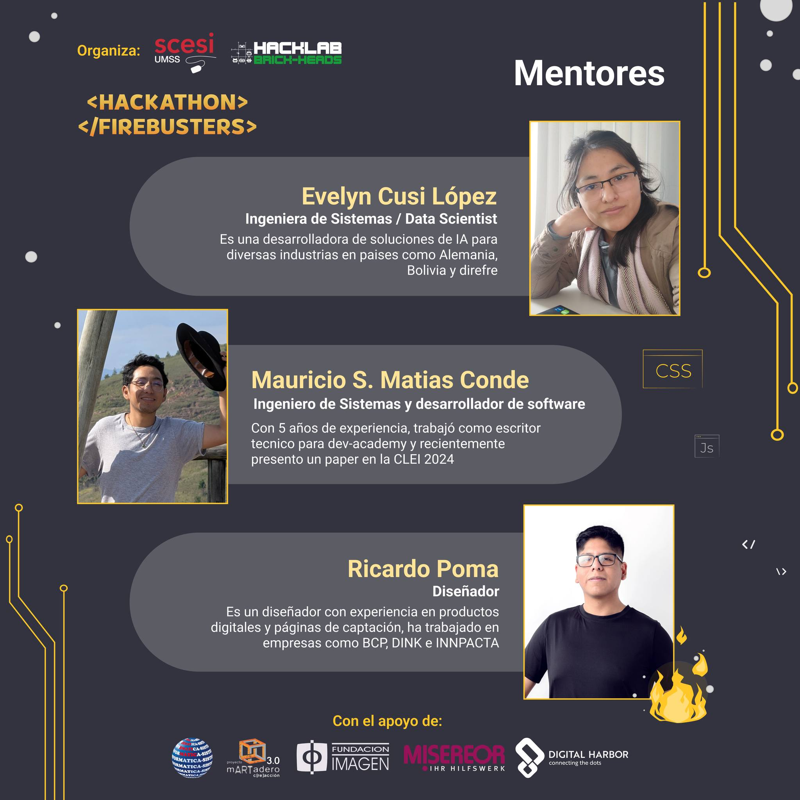

Data Scientist / AI Engineer
I specialize in building production-ready AI systems that drive real business results. Me especializo en construir sistemas de IA listos para producción que impulsan resultados de negocio reales.
Datec LATAM - D4G | 2023 - 2025
Datec LATAM - D4G | 2023 - 2025
Leading the design and delivery of production AI systems. From Document AI pipelines to enterprise RAG platforms serving 300+ users.
Liderando el diseño y la entrega de sistemas de IA en producción. Desde pipelines de Document AI hasta plataformas RAG para más de 300 usuarios.
Project44 | 2021 - 2023
Project44 | 2021 - 2023
Optimized global logistics visibility. Improved ETA accuracy by 21% and replaced high-cost APIs with in-house geospatial solutions.
Optimización de visibilidad logística global. Mejora de la precisión de ETA en un 21% y reemplazo de APIs costosas por soluciones geoespaciales propias.
Semantics S.R.L. | 2018 - 2021
Semantics S.R.L. | 2018 - 2021
Building the foundation of scalable systems. Focused on backend tools, genetic algorithms, and Agile/TDD practices.
Construyendo la base de sistemas escalables. Enfocada en herramientas backend, algoritmos genéticos y prácticas Agile/TDD.
Production-grade solutions that drive measurable business value.
Pipeline combining YOLOX, OCR, and LLMs deployed on GCP to automate operational document processing.
Pipeline combinando YOLOX, OCR y LLMs en GCP para automatizar el procesamiento de documentos operativos.
Time-series forecasting for 500+ SKUs on Databricks using PySpark and MLflow for automated purchasing.
Predicción de demanda para +500 SKUs en Databricks usando PySpark y MLflow para compras automatizadas.
Production RAG platform using LangChain and vector databases, enabling internal knowledge access.
Plataforma RAG en producción usando LangChain y bases de datos vectoriales para acceso a conocimiento interno.
Global logistics engine improved through real-time GPS data cleansing and geospatial modeling.
Motor logístico global mejorado mediante limpieza de datos GPS en tiempo real y modelado geoespacial.
The technical foundation behind every solution.
Intelligence Core
Scalable Backend
Cloud & Big Data
Databricks Machine Learning Associate
Databricks | 2025
SAP Generative AI Developer
SAP | 2025
Build and Deploy ML Solutions on Vertex AI
Google Cloud Skills Boost | 2024
M.Sc. Data Science
Pontificia Universidad Católica de Chile
Santiago, CL | 2025
B.Sc. Systems Engineering
Universidad Mayor de San Simón
Cochabamba, BO | 2020
Insights into the perspectives and passions that balance my technical life.
Perspectivas y pasiones que equilibran mi vida técnica.

Fostering AI growth in LATAM through mentorship and hackathons. I believe in technology as a regional equalizer.
Impulsando el crecimiento de la IA en LATAM mediante mentorías y hackathons. Creo en la tecnología como igualador regional.
Seeking clarity in the mountains. Long trails are where I solve the most complex architectural puzzles.
Buscando claridad en las montañas. Los senderos largos son donde resuelvo los puzzles arquitectónicos más complejos.
My silent coworkers. Their poise and focus during late-night coding sessions are my best productivity tool.
Mis compañeros silenciosos. Su enfoque durante las sesiones nocturnas de código son mi mejor herramienta de productividad.